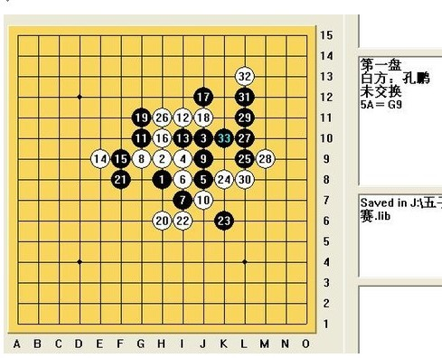
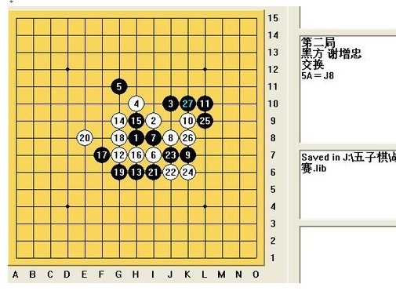
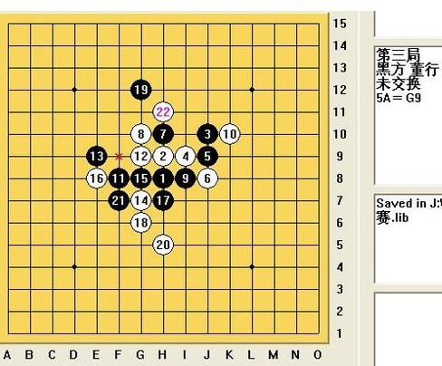
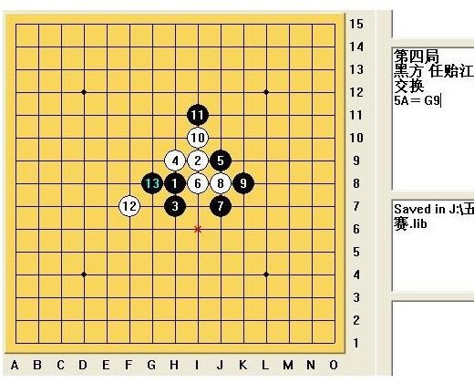
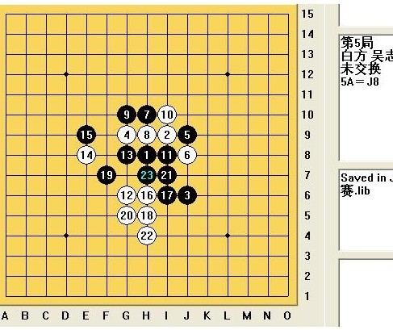
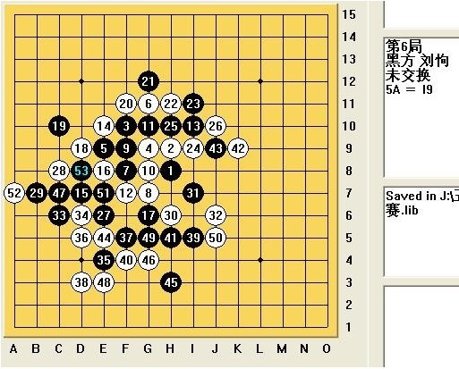

茗弈张真全团总结
首页
茗弈阁
#1 茗弈张真全团总结 作者：心上人 发表时间：2010-5-22 8:56:59
第一盘：

开赛第一盘，猜想对手可能不强。所以开疏星拼中盘。赛完后对手透露，第19手是必败。我后面也拆了看，确实如此。此对手的谱量真的不小啊。但是对手没能算出如何取胜，26手猥琐防守，却防得不对，27手做V必胜。
第二盘

曾在网上用第8手秒杀了不少新手。虽知8手走到对面更好，但是却抱着一丝幻想，依然走了这。到第20手时，本想走现21这点防一下撑撑，但是自己当时没有算出黑能VCT，索性直接走这与之对攻。到第23时，发觉自己计算力真的是不行了。
第三局

这局本来是安了心的准备和对方拼一拼中盘，结果对手太粗心，19手飘了一下。当我走出20时，对手才发现自己被抓了。
第四局

看着他们队给我们队友开了残月，所以开另外一个黑优局。对手见此开局后，脸上显然露出不会的表情。10手防守错误，直接抓掉。
第五局

白棋16手看似强大，实则并无多大优势。当时粗略算了一下，认为17手就行防住。对方走到20手时，当时认为自己已经占据了绝对优势，22手一出，就毫不犹豫的走出了23去反，结果对手直接叫裁判，说我禁手。这时我才仔细一看，还真是。。。居然自己往禁手上拍，郁闷。22手若挡在外面，虽说白已必胜，但是赛后连球圣这样的高手都初认为黑优，再加上在比赛的强大压力下，对手是否能够走出杀来还是个未知数。参赛以来首次自个往禁手上拍，无比的郁闷。
第六局

32手前面进行都很正常。第32手，算准黑棋左面无杀，走此点占领空间。33手做V，34手唯一防。至39手时，黑棋也算到没有杀，所以挡住我的眠二以守为攻。40手走了一步晕招，应该先将黑35+37+17这线冲成长连后才能这样走。黑棋此时也走了一步晕招：若先在I8冲四，则就简单VCT了，但是黑没有考虑清楚，直接走了41。此时我终于意识到了，42手冲长，然后44
#2 Re:茗弈张真全团总结 作者：茗弈宽容 发表时间：2010-5-22 10:50:03
这是在中国连珠转的吧？爱五子早就发了呀。
#3 Re:茗弈张真全团总结 作者：茗弈宽容 发表时间：2010-5-22 10:51:04
ShowPost.asp?ThreadID=10131